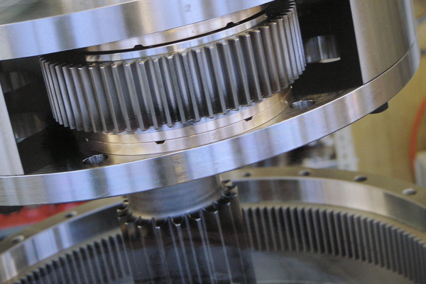
Wir entwickeln, konstruieren und produzieren seit mehr als 90 Jahren Getriebe und mechanische Elemente, vorwiegend nach Mass. Unser Erfolg basiert auf fundiertem Fachwissen, sehr viel Erfahrung und überdurchschnittlichem Engagement.
Wir sind stolz auf unsere Arbeit, auf unseren Maschinenpark und auf unsere Flexibilität im Umgang mit Kunden. Wir produzieren auftragsbezogen – und dank der grossen Fertigungstiefe unseres Betriebes sehr schnell und sehr flexibel.
Wir identifizieren uns mit unserer Firma und mit der Qualität unserer Produkte. Die langjährige Betriebszugehörigkeit unserer Mitarbeiter (und deren enormes Wissen und Können) bieten Gewähr für Präzision und professionelle Effektivität.
Wir orientieren uns an sehr hohen Qualitätsansprüchen und arbeiten ausschliesslich mit hochqualifizierten Zulieferunternehmen.
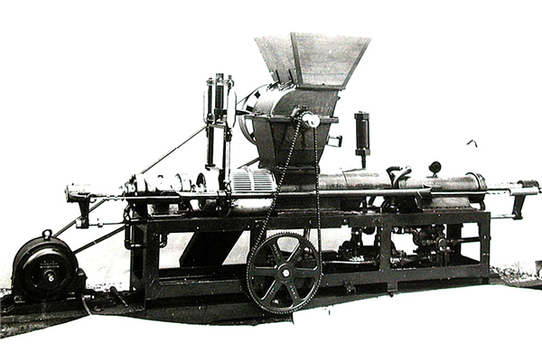
1923 – Am Anfang stand die Idee eines neuartigen Getriebe-Systems.
Johan Sebastian Kienast gründet die Kienast & Co, ACBAR Company Zürich, um dieses Getriebe zu entwickeln, herzustellen und zu vertreiben. Die Bezeichnung des Getriebes: ACBAR Excentergetriebe.
1926 bis 1980 – Wichtigste Daten.
1926 – Neuer Auftritt: ACBAR AG Zürich
1927 – Neuer Besitzer: GEBRA Maschinenfabrik Uerikon (Zürich)
1930 – Neuer Auftritt: Maschinenfabrik Uerikon, Gebr.Blöchlinger & Co.
1933 – Neuer Auftritt: ACBAR Getriebe und Maschinenbau; Neuer Besitzer: Fridolin Michel - Diethelm & Co., Uerikon (Zürich)
1958 – Neuer Auftritt und neue Führung (Generationenwechsel): ACBAR Fridolin Michel & Co., Getriebe und Maschinenbau, Uerikon (Zürich)
1962 – Domizilwechsel nach Lachen / Altendorf (SZ)
1980 – Die AKIM AG.
Der Ingenieur Erwin J. Kaufmann gründet die AKIM AG, ein Ingenieurbüro für Antriebstechnik, bzw. für die Entwicklung, die Konstruktion und den Vertrieb von Getrieben. Das Zweischeibengetriebe entsteht. Bald folgen andere Konstruktionen nach Mass – für Elektrofahrzeuge, Invalidenmobile, Handwagen, Stapler, Golf Caddys und vieles mehr.
Die Produktion wird auf verschiedene Werkstätten in der näheren Umgebung verteilt. Die Zahnräder produziert die Fridolin Michel & Co, ACBAR Getriebe und Maschinenbau in Altendorf – das Unternehmen, in dem Erwin J. Kaufmann während mehr als 14 Jahre für die Technik und den Verkauf verantwortlich war.
1981 – Die AKIM AG übernimmt ACBAR.
Im Rahmen einer Nachfolgelösung erwirbt die AKIM AG die ACBAR und verschiebt den Sitz nach Lachen. Die AKIM AG verfügt jetzt über eine leistungsstarke Produktionsstätte, hochqualifizierte Mitarbeiter und einen treuen Kundenstamm – und ein bestens eingeführtes Getriebe-Programm, welches durch die eigenen Getriebe optimal ergänzt wird.
Mit den Zweischeiben-Exzentergetriebe werden neue Anwendungs- und neue Absatzgebiete erschlossen. Der Exportanteil steigt.
1984 – Beginn der Erfolgsgeschichte von 2S-R84.
Eine völlig neue Getriebereihe mit Verdrehspiel-Einstellung für Servo-Anwendungen, den Kundenwünschen individuell anpassbar, wird entwickelt. Die Reihe wird sehr erfolgreich und bildet bald ein wichtiges Standbein der Firma.
1988 – Erste Produktionslizenz.
Um den EU-Raum einfacher und besser bedienen zu können, vergibt die AKIM AG eine Produktionslizenz an den renommierten Getriebebauer REDEX (F).
1990 – Die 2S-R90 Reihe entsteht.
Basierend auf den Erfahrungen mit der 2S-R84 Reihe wird die 2S-R90 Reihe entwickelt. Sie entspricht den Kundenbedürfnissen und den Anforderungen an moderne Antriebstechnik.
1991 – Spielarme Grossgetriebe sind gefordert.
Auf Basis der 2S-R90 Reihe werden Getriebe mit Drehmomenten bis über 30‘000Nm in spielarmer Ausführung entwickelt.
1993 - Die ersten Zentrifugen-Getriebe entstehen.
Auf Basis des Zweischeibengetriebes werden die ersten Zentrifugen-Getriebe entwickelt.
1995 – Auf Gross folgt Grösser.
Die Qualität und Zuverlässigkeit der Grossgetriebe überzeugt. Es braucht noch grössere Getriebe - mit Drehmomenten bis weit über 60‘000Nm.
2002 –Planetengetriebe zur Ergänzung.
Zur Ergänzung des Angebots werden spielarme Getriebestufen in Planetenausführung entwickelt.
2004 – Die AKIM AG wird Familienunternehmen.
Die Familie Erwin J. Kaufmann übernimmt 100% der Aktien und wird alleiniger Besitzer der AKIM AG.
2005 – Qualität und Zuverlässigkeit.
AKIM Zentrifugen-Getriebe überzeugen – ihr Marktanteil wächst weiter.
2008 – Branchenübergreifende Nutzung.
Pharma, Petro, Maschinen, Lebensmittel, Anlagenbau, Wehrtechnik, Seilbahnen, Werkzeugmaschinen, Solar ... – überall sind AKIM Getriebe im Einsatz.
2013 – Die nächste Generation - Thomas Kaufmann übernimmt.
Erwin J. Kaufmann übergibt seinem Sohn Thomas die Alleinverantwortung für die Geschäftsführung.
Heute - Die AKIM AG und deren Produkte sind weltweit vertreten.
AKIM steht für Getriebetechnik und umfassendes Engineering – in Schweizer Qualität.
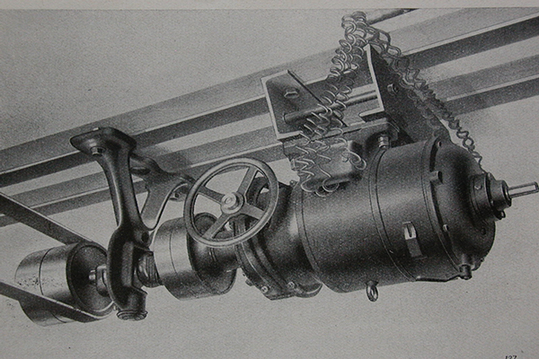
1927 – Transmissionsantrieb
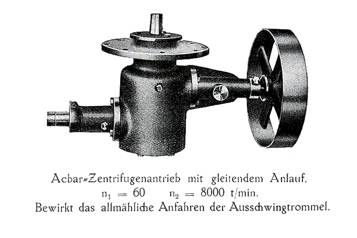
1932 – Zentrifugen Getriebe
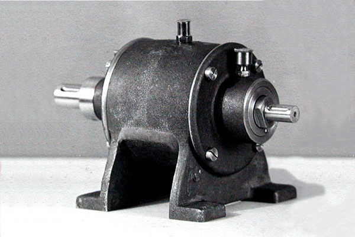
1936 – ACBAR Getriebe
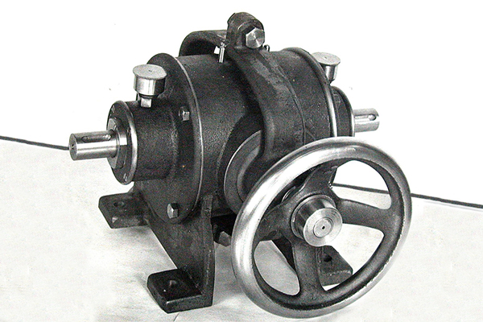
1940 – ACBAR Getriebe
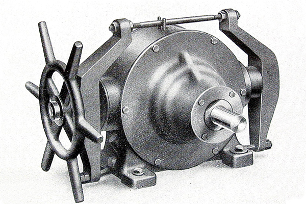
1944 – ACBAR Getriebe
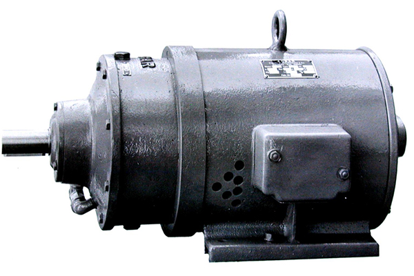
1950 – Getriebemotor
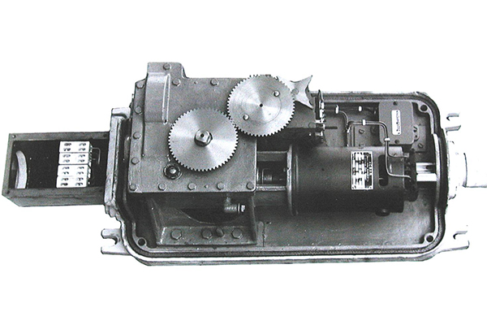
1952 – ACBAR - Stellantrieb SBB
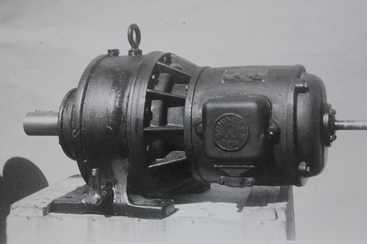
1960 – ACBAR Getriebe
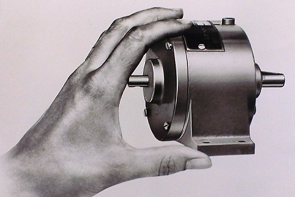
1965 – ACBAR Kleingetriebe
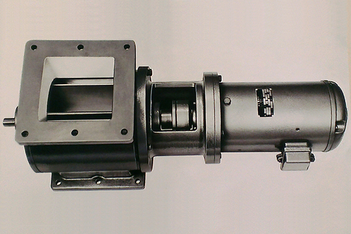
1966 – Dosierschleuse mit ACBAR Motorgetriebe
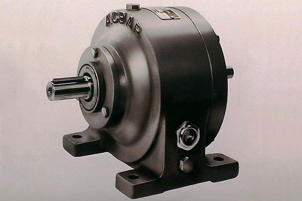
1967 – ACBAR Getriebe
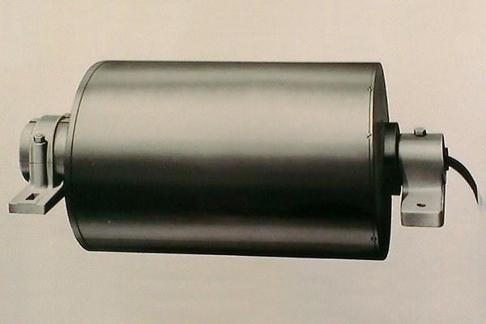
1970 – Trommelgetriebemotor
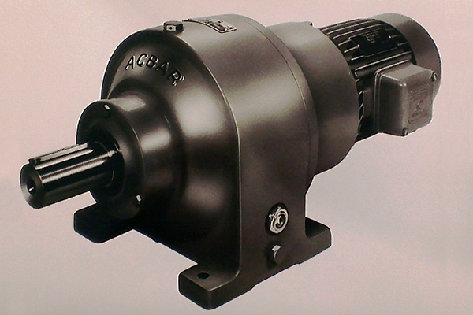
1972 – ACBAR Motorgetriebe
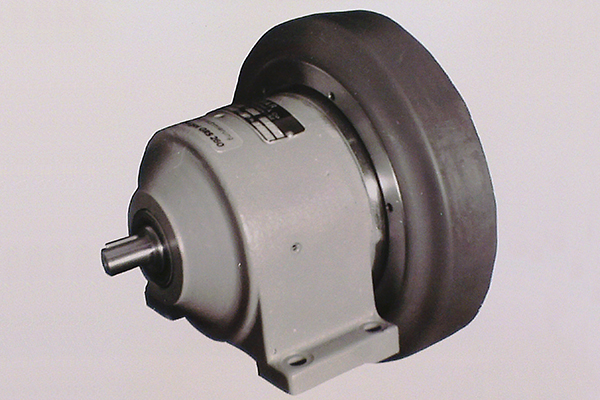
1975 – ACBAR Fahrantrieb
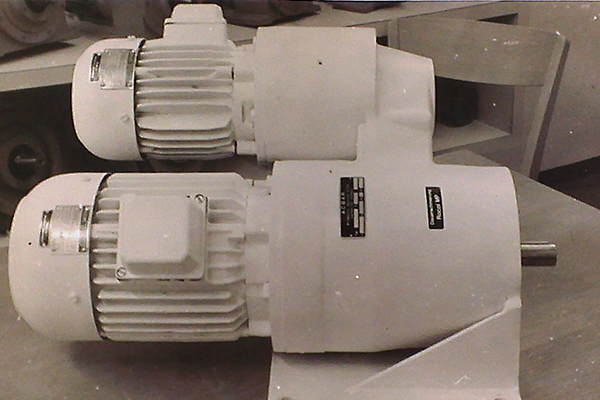
1977 – ACBAR Überlagerungsgetriebe
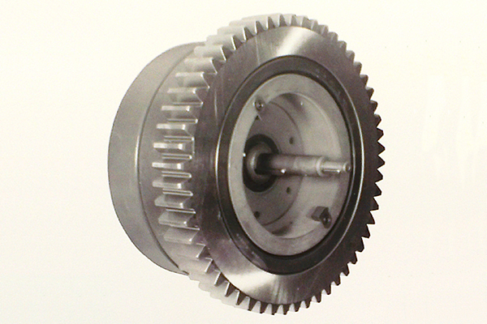
1978 – ACBAR Hubwerksgetriebe
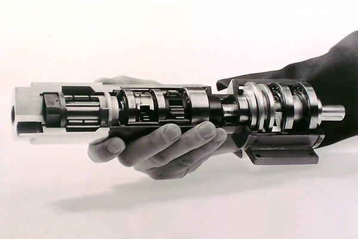
1980 – ACBAR Getriebe mit Planetenvorstufe und Druckluftmotor
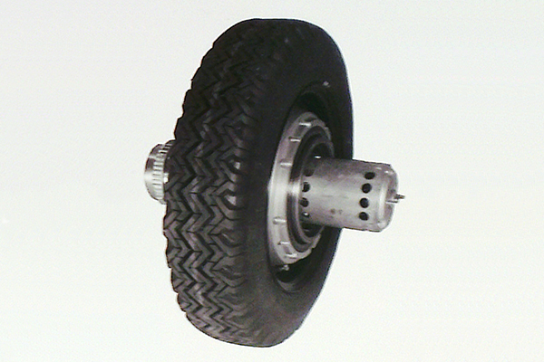
1984 – ACBAR Radnabenantriebe
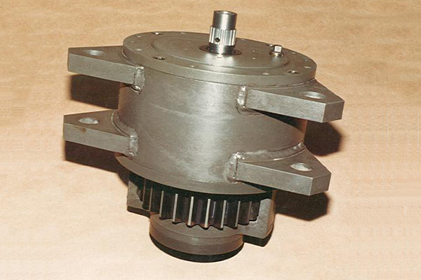
1986 – Panzer-Richtgetriebe
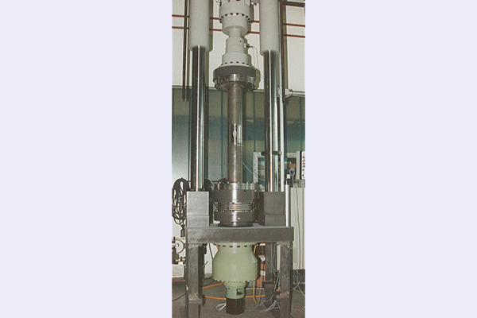
1988 – Servogetriebe
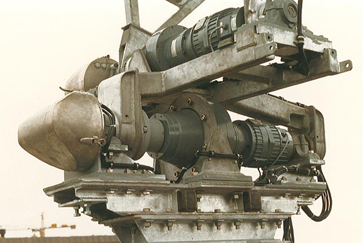
1990 – Richtgetriebe